Here is all the documentation for assignment 4!
Phase 1: Planning
For this week's assignment, my intention was to keep my overall design and 3d fabrication as simple as possible, due to time constraints.
Over the weekend I was in Arizona, and was inspired by the Breezeblocks (shoutout to Angel!)
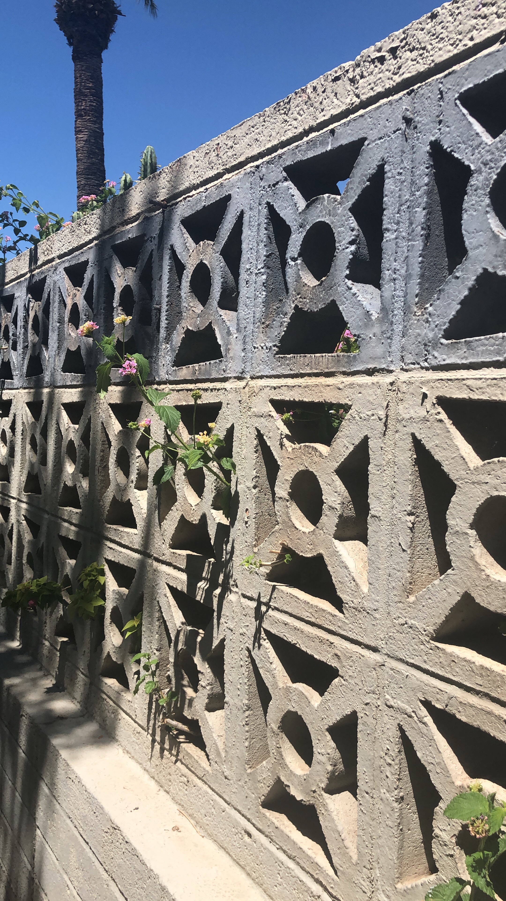
I then shifted to Pinterest, and found some inspiration for a Breezeblock lamp
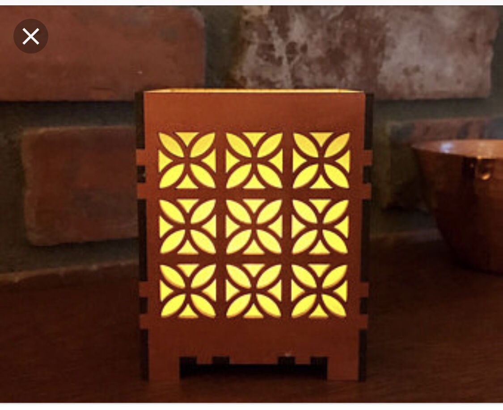
My strategy for the design was to build the four sides using cardboard and a laser cutter, and would then create a simple base in the 3D to hold the lamp. I began doing some sketching to map out the laser cut sides.
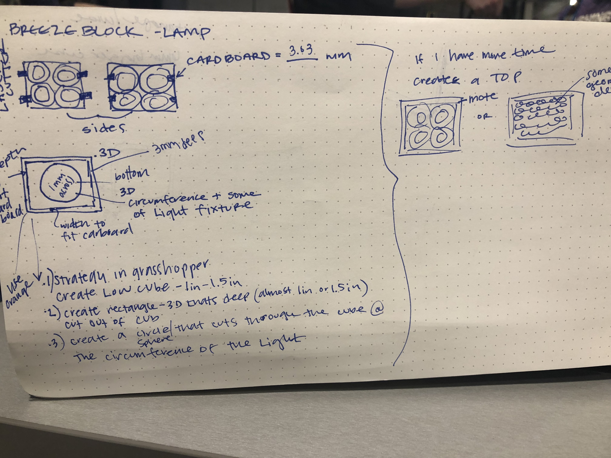
I went through a test print and two other quick rounds of printing to get the size I needed.
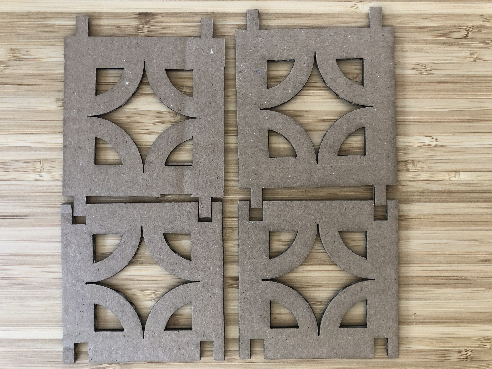
Phase 2: 3D Design
For the 3D design, I spent time considering how to best (minimally) design a base to ensure I didn't spend too much time in the 3D printer. I consulted with Peter, Leo and eventually Joshua who helped me solidify a design strategy.
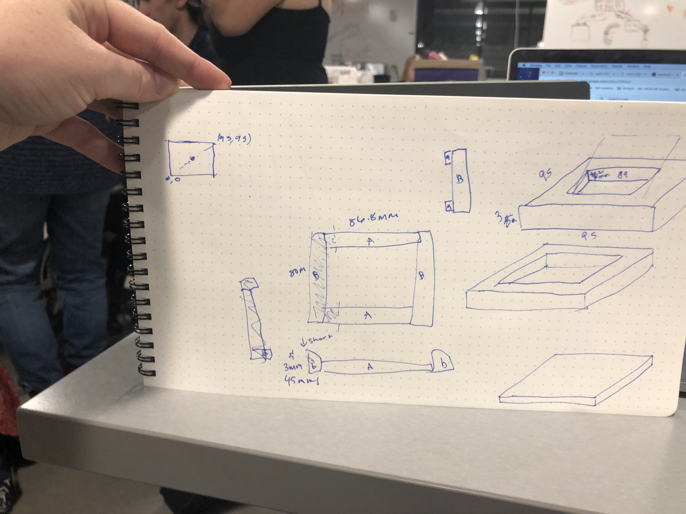
Thanks to Joshua for helping me put my geometry hat on to use Rhino and build out two 3D rectangles within each other, so I could use Boolean difference between the two objects.
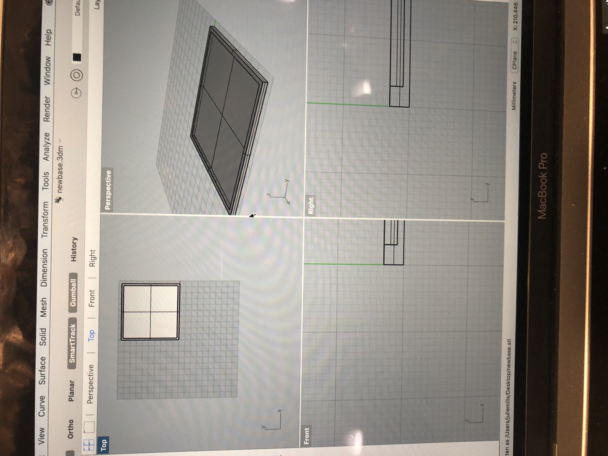
I then saved and opened my file in Dremel
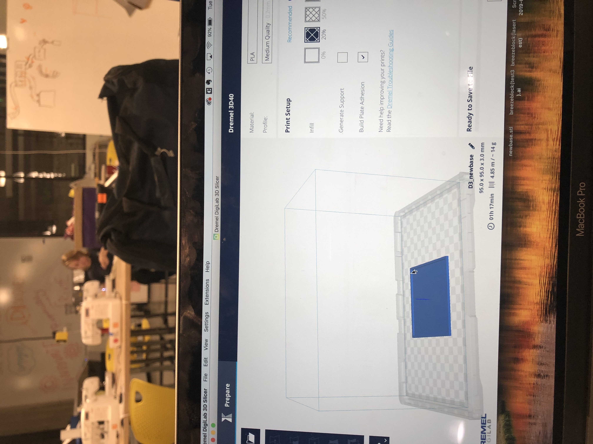
One hour and seventeen minutes later my base was printed, it's simple thin, and does the job. Surprisingly, I did not run into issues on the 3D (partially because my design was so simple), but am grateful for the break I got, I needed that this week, and it left me optimistic for the next time using the 3D machines.
Here is my lamp!
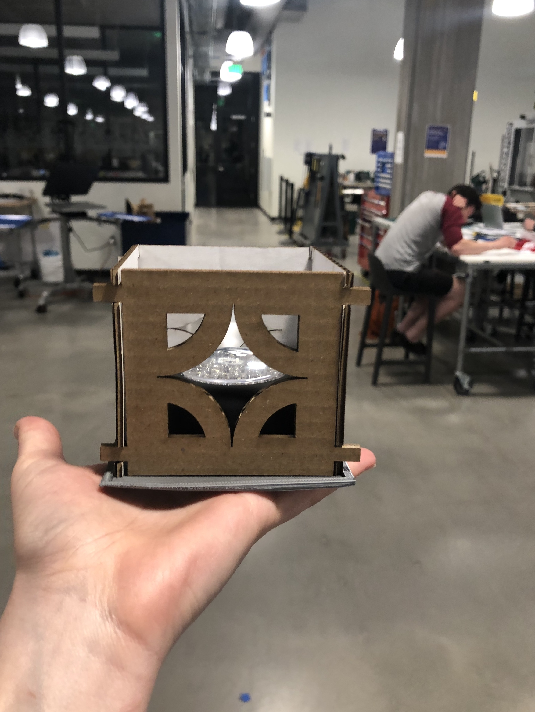
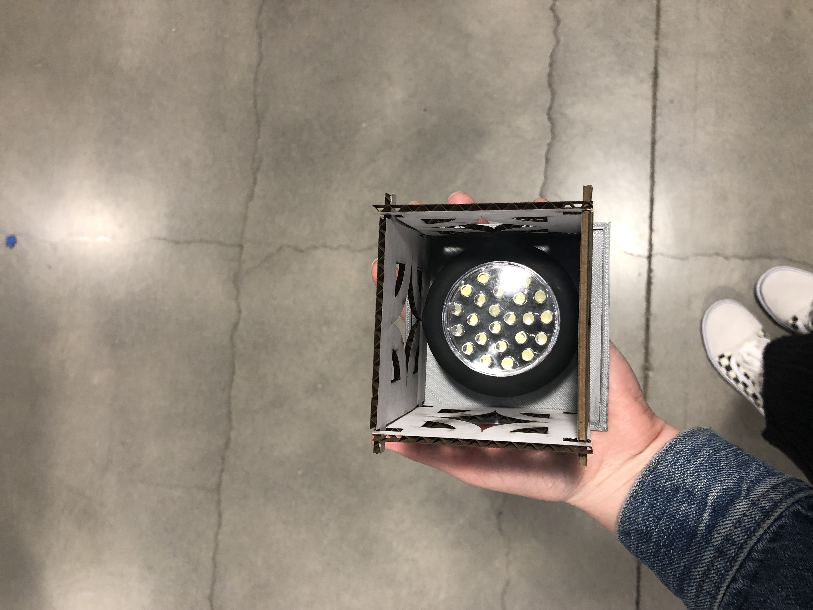
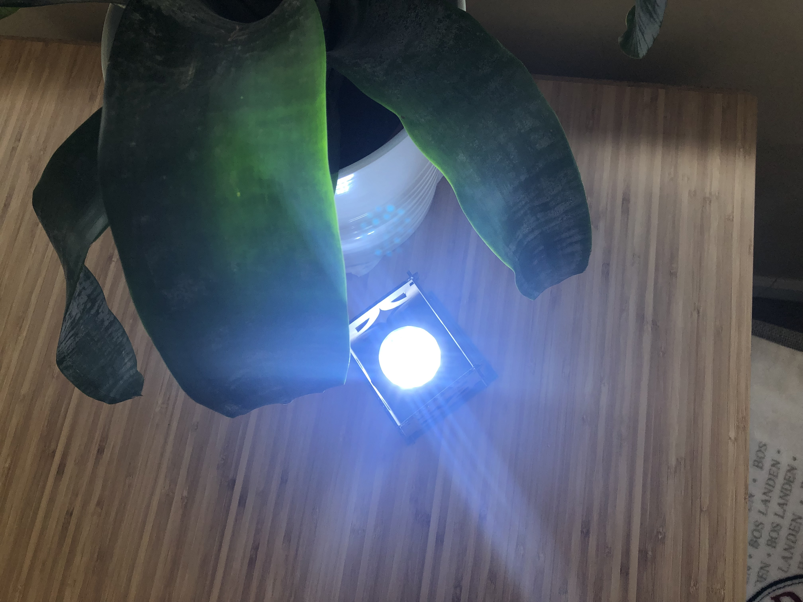
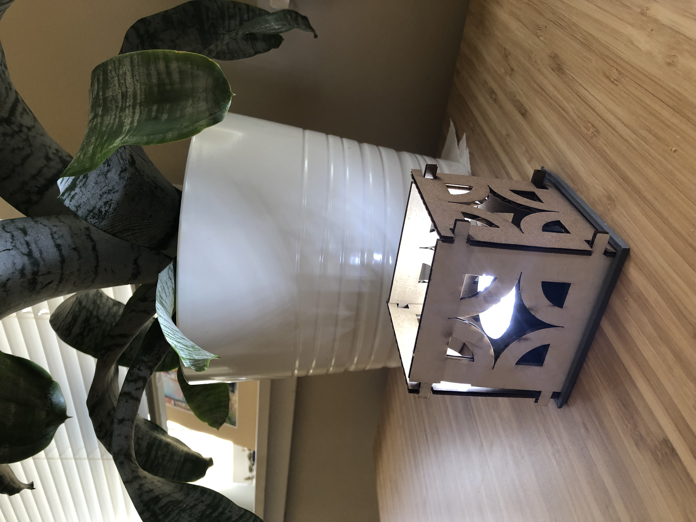
See Rhino file for laser elements here
See Grasshopper file for laser elements here
See Rhino file for 3D base here
Credits: Thanks to Lee, Joshua, and the Tuesday night crew for support.